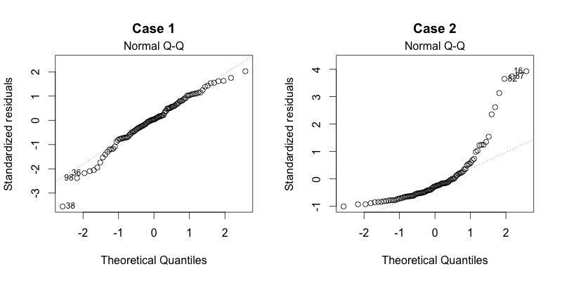

2 Das lineare Modell
Das lineare Modell ist die Basis von fast allem. Auch was Sie schon kennen, wird unter dem Konzept «lineares Modell» zusammengefasst:
- Varianzanalyse
- Korrelation
- Regression
Das lineare Modell ist auch nicht auf lineare Zusammenhänge beschränkt. Es kann sehr gut mit kurvilinearen Zusammenhängen umgehen. Also, wenn zum Beispiel bei einer Gesamtnachrichtenlage mit sehr hohem Nachrichtenwert der Umfang des Medienkonsums steigt. Irgendwann erfährt diese Wirkung einen Deckeneffekt, weil niemand auf Dauer 24h am Tag Medien konsumieren kann. Vielleicht steigt der Nachrichtenkonsum mit dem Nachrichtenwert sogar Anfangs exponentiell (wie Coronazahlen) und hat dann bald einen Umkehrpunkt und strebt gegen ein mögliches Maximum. Selbst solche komplexeren Zusammenhänge können in einem linearen Modell dargestellt werden.
Die höhere Statistik wie Faktorenanalysen, Strukturgleichungsmodelle, Zeitreihenanalysen (Forcastings oder Laten-Growth-Curve-Modelle) bauen alle auf dem linearen Modell auf. Und auch Computational Science nutzt Modelle und zwar überwiegend als Basis die linearen Modelle.
Welche der folgenden Analysemethoden gehören zum linearen Modell?
2.1 Varianzanalyse
Bei der Varianzanalyse werden Streuungen zerlegt. Das bedeutet, dass die Unterschiede zwischen den Fällen (z.B. Personen) in Bezug auf eine Variable (z.B. Links-Rechts-Spektrum) einen Mittelwert (Durchschnitt) haben und Abweichungen von diesem Mittelwert. Da die Abweichungen von einer Mitte negativ sind (links vom Mittel) und positiv sind (rechts vom Mittel) würde sich eine Summe aus allen Mittelwertabweichungen auf 0 aufaddieren – darum ja eben auch Mittelwert, weil er in der Mitte liegt. Darum nehmen wir von den Mittelwertabweichungen immer das Quadrat. Die Quadrate (Minus * Minus = Plus und Plus * Plus = Plus) ergeben in der Summe einen positiven Wert und wenn man den durch die Anzahl n der Fälle teilt, dann hat man die Varianz. Anders gesagt: Die Varianz ist die durchschnittliche quadrierte Mittelwertabweichung (so steht’s ja auch schon oben).
Bei der Varianzanalyse teilen wir unsere Stichprobe in Unterstichproben auf, also z.B. anhand von zwei Gruppen, wie Stadtbevölkerung und Landbevölkerung und schauen dann wo die Stadtbevölkerung im Mittelwert auf der Links-Rechts-Skala liegt und wo die Landbevölkerung im Mittel der Links-Rechts-Skala liegt. Mit hoher Sicherheit werden sich die Mittelwerte unterscheiden. Nimmt man nun die Varianz der Landbevölkerung um ihren Mittelwert und die Varianz der Stadtbevölkerung um ihren Mittelwert und addiert die zusammen, kommt ein kleinerer Wert heraus, als wenn man die Varianz für die Links-Rechts-Skala berechnet (nur wenn beide Mittelwerte identisch wären, wäre auch die Summe der Varianzen identisch), ohne die Unterscheidung zwischen Stadt und Land zu machen. Der Wert wird immer kleiner, je weiter die beiden Mittelwerte voneinander entfernt liegen. Wenn für die Links-Rechts-Skala die Summe der Varianzen der beiden Gruppen deutlich kleiner ist als die Gesamtvarianz, dann hat die Unterscheidung zwischen Stadt- und Landbevölkerung Varianz «aufgeklärt». Das ist Varianzaufklärung und die Basis der Varianzanalyse. Es geht kurz gesagt darum, ob die Unterschiede in einer Variable gross sind, weil sie durch eine andere Variable bedingt werden, für die die Varianz zerlegt wird. Darum sagt man auch «Varianzzerlegung». Wir werden uns das noch ausführlich bis genüsslich anschauen in diesem Semester.
Hier können Sie mit einer kleinen Onlineapp mit einer ANOVA (ANalysis Of VAriance) interaktiv herumprobieren:
Nun stellen Sie sich vor, Sie machen eine Auswertung und haben eine Variable die Sie erklären wollen, also eine abhängige Variable (AV), wie z.B. die Verweildauer auf TikTok-Videos. Die erklären Sie damit, wie viel Spass jemand an einem gezeigten Video hat. Sie könnten den Spass einteilen in «kein Spass», «wenig Spass» und «viel Spass». Dann könnten Sie für die drei Gruppen eine Varianzanalyse rechnen, testen Ihre Hypothesen mit t-Tests oder einer One-Way-Anova und kommen anhand der t-Werte oder auch F-Werte zu einer Entscheidung über statistische Hypothese: Der Zusammenhang ist signifikant oder nicht. Ok. – Wenn das «lineare Modell» Varianzanalyse ist und Regression, dann müsste man doch dieselbe Analyse mit einer Regression machen können. Und ja, das kann man. Und es kommen ganz genau dieselben Ergebnisse raus: Dieselben t-Werte, dieselben F-Werte und natürlich, darauf fussend, dieselben p-Werte (Wahrscheinlichkeit, dass die t- und F-Werte zustandekommen, obwohl die Nullhypothese gilt). Wir probieren das mal: Und es wäre extrem peinlich für mich, wenn da unterschiedliche Werte rauskommen – aufregend!
In R kann man mit Extrapaketen auch Varianzanalysen machen. Es gibt aber keine Pakete für Regressionen. Das liegt daran, dass das lineare Modell (lm) in R die Regression ist! Wir werden uns im ersten Teil des Moduls also mit dem linearen Modell auseinandersetzen.
2.2 Regression
Die Regression ist das einfachste und gleichzeitig mächtigste Werkzeug multivariater Datenanalyse. Aus den Kovarianzen mehrerer Variablen wird eine Funktion mit wenigen Kennwerten berechnet. Diese Kennwerte als Einzelwerte geben Auskunft über die Zusammenhänge zwischen einzelnen Prädiktoren und einer abhängigen Variablen. Man muss also vorher sagen, was man erklären will und womit man es erklären will. Die zu erklärende Grösse nennt man in der Sozialwissenschaft (und anderen Disziplinen): abhängige Variable (AV oder DV) und die Erklärungsgrössen nennt man: unabhängige Variablen (UV oder IV).
Die Regression baut auf Kovarianzen auf (bzw. Korrelationen, die wir uns besser vorstellen können). Die Regressionsgerade wird bei einer bivariaten Regression durch eine Konstante (in der Abbildung @ref(fig:KorrelationRegression) ist sie 1) und einem Anstieg je Variable gekennzeichnet (in der Abbildung ist es 0,5 für die eine UV = x).
Das bedeutet, dass bei einer bivariaten Regression zwei b’s die Lage der Regressionsgeraden bestimmen: Das ist zum einen die Konstante \(b_1\) und zum anderen der Anstieg \(b_2\) für die Gerade. In der Abbildung @ref(fig:RegressionsGeraden) sehen Sie links zwei Regressionsgeraden mit unterschiedlichen \(b_2\) (rot positiv und grün negativ). Auf der rechten Seite sehen Sie drei Regressionsgeraden mit unterschiedlichen \(b_1\), wobei das b der roten Gerade am grössten ist (knapp 70), grün am kleinsten (bischen über 20) und blau in der Mitte liegt (knapp 40).
Welche Funktion und Eigenschaften haben die Regressionskoeffizienten b?
2.2.1 Das Modell und die Regressionsgleichung als Schätzung
Die formelle Schreibweise eines Regressionsmodells enthält griechische Buchstaben um zu signalisieren, dass es sich hier um unbekannte Grössen, die Parameter in der Grundgesamtheit, handelt. So lange wir über die Qualität und die Eigenschaften von Regressionsrechnungen sprechen, wird uns der Unterschied zwischen \(\beta\)’s und b’s interessieren.
Als Gleichung heisst das, dass die Abhängige Variable \(Y_i\) durch eine gewichtete Summe (siehe Formel @ref(eq:RegressionParameter)) von einer oder mehreren unabhängigen Variablen erklärt wird. Diese UVs werden in der Regel mit X gekennzeichnet und weil es mehrere davon geben kann, werden sie durchnummeriert. Also mit dem Subscript i für das Durchzählen werden sie griechisch für die Parameter als \(\beta_2X_{i2}\) bezeichnet oder eben als \(\beta_3X_{i3}\) usw. Dann gibt es noch den Rest \(U_i\). Das ist also das theoretische statistische Modell, dessen Parameter wir mit Kennwerten schätzen wollen.
\[\begin{align} Y_i&=\beta_1 + \beta_2X_{i2} + \beta_3X_{i3} + U_i \label{eq:RegressionParameter} \end{align}\]Wenn man mal genau schaut was hier eigentlich noch variabel ist, nach der Stichprobenziehung, dann wird klar, dass die \(Y_i\) ja in der Datenerhebung gemessen wurden und damit Werte enthalten, die wir statistisch nicht mehr ändern. Das Gleiche gilt für die \(X_i\)-Werte der Variablen \(X_2\) und \(X_3\). Also sind diese Grössen eigentlich keine «Variablen» mehr, sondern längst durch echte Werte fixiert. Zu schätzen sind nur die Bs, also \(b_1\), \(b_2\) und \(b_3\) (übrigens nummerieren wir die so durch, weil sie später als Vektor in der Matrizenrechnung die erste Zeile belegen, die zweite und dritte usw.). Wenn wir die Regressionskoeffizienten, die b’s in unserer Stichprobe, berechnet haben, müssen wir uns noch fragen, wie gut, also unverzerrt und genau sie die unbekannten Parameter (\(\beta\)s) messen, also – etwas technischer ausgedrückt – ob die b die \(\beta\) erwartungstreu und effizient schätzen. Dafür gibt es einige Voraussetzungen, die wir uns später [in Kapitel noch nicht da] noch anschauen werden. Am Ende der Formel steht das \(e_i\) für die Fehler, also den unerklärten Rest der Varianz, der zwischen den durch das Modell geschätzten Werten (gekennzeichnet mit einem Dach als \(\hat{Y_i}\)) und den gemessenen Werten liegt. Während die s’s die Schätzer für die \(\beta\)s sind, ist das \(e_i\) kein Schätzer für \(U_i\). Das liegt daran, dass das \(e_i\) nur eine Fehlerstreuung in der Stichprobe ist und \(U_i\) viel mehr angibt, dass unberücksichtigte Einflussgrössen und ein stochastischer Rest nicht vom Modell abgebildet sind.
\[\begin{align} Y_i&=b_1 + b_2X_{i2} + b_3X_{i3}+e_i \end{align}\]Bei einer Regression mit zwei UVs wird praktisch eine Ebene in die Punktwolke gelegt (siehe @ref(fig:Regressionsebene)). Wir schätzen aber eine multivariate Regression, damit wir bivariat interpretieren können, also je UV sagen, wie stark der Effekt auf die AV ist. Insofern interpretieren wir je Variable nur ein b oder ein (BETA), was dem Ansteig (Zusammenhang) einer Variablen entspricht. Das können wir machen, weil die Statistik bzw. unser Statistikprogramm für uns die Kontrolle der übrigen Variablen übernimmt und wir schön die kontrollierte bivariate Beziehung interpretieren können. Die b’s beschreiben dabei die Gerade, die die Ebene an der Stelle bildet, die für die andere Variable der Durchschnitt ist. Bei drei UVs spannen die b’s zusammen eigentlich einen Raum auf, was sich aber niemand mehr visuell vorstellen kann. Die Statistik kann das aber und erledigt das so für uns, dass wir uns immer nur die Beziehungen anhand der jeweiligen b’s der einzelnen UV’s anschauen können.
Hier wird eine Regression recht gut als Punktwolke visualisiert: http://shiny.calpoly.sh/3d_regression/.
Schreiben Sie die Formel für die einfache bivariate Regression auf?
2.2.2 OLS
Eine der einfacheren und grundlegenden Methoden um die b’s zu bestimmen ist die Methode der kleinsten Quadrate bzw. OLS, was das Akronym für Ordinary Least Squares ist. Mit dieser Methode legt die Mathematik eine Gerade in eine Punktwolke, weil sie es nicht visuell und intuitiv machen kann. Das Prinzip ist recht einfach: Man versucht b’s zu finden, für die die Fehler möglichst klein sind. Das ist im Grunde die Optimierungsaufgabe der OLS-Methode. Genau das machen wir auch, wenn wir eine Gerade in eine Punktwolke legen, wir bauen sie so ein, dass sie «optimal reinpasst» also die Abstände zu den einzelnen Punkten minimal sind.
Sehr gut hier zum anschauen und spielen:
Als Beispiel hatte ich in der Vorlesung gebracht, dass man auch mal überlegen könnte, welcher Wert eine Verteilung einer Variablen optimal repräsentieren würde. Wenn wir dieses Optimierungsproblem an OLS übergeben würden, dann würden wir sagen: Suche einen Wert a aus allen möglichen a-Werten, der für eine Variable x die kleinsten quadrierten Abstände hat. Damit es OLS versteht würden wir schreiben: \(\text{OLS bitte minimiere folgende Gleichung:} \sum_i{(x_i-a)^2}\)
Jetzt wissen wir, dass die quadrierten Abweichungen gross sein müssen, wenn a links vom Optimum liegt und immer kleiner wird, wenn wir uns dem optimalen a-Wert annähern. Dann wird die Summe der quadratischen Abstände wieder grösser. Also haben wir eine Funktion, die einer quadratischen Funktion folgt (dass die so aussieht, müssen wir garnicht wissen, aber es hilft vielleicht der Vorstellung). Wenn wir wissen wollen, wo diese Funktion ihr Minimum hat, dann können wir die Funktion ableiten und dann nach der Nullstelle der abgeleiteten Funktion suchen. An der Stelle liegt dann der a-Wert, der die Streuung einer jeden Variablen optimal abbildet, weil wir diese Ableitung völlig abstrakt und ohne konkrete Werte gemacht haben und sie daher immer gilt. Also:
\[\begin{align} \frac{df}{da} = & \sum_i{(x_i-a)^2}^{\prime} = 0 \label{eq:OLS-Ableitung} \\ 0 = & \sum_i{[x_i^2 - 2x_ia + a^2]}^{\prime} \label{eq:OLS-Ableitung2} \end{align}\]In der ersten Zeile das df/da bedeutet, dass abgeleitet (differenziert) werden soll und zwar die Funktion f nach a. In der zweiten Zeile sehen wir dann schon die Ableitung nach Ableitungsregeln (wer extrem Bock hat, kann sich die ja nochmal angucken) und gleich auch schon mit 0 gleichgesetzt.
In der nächsten Zeile @ref(eq:Umstellen1) wird ein bischen aufgelöst und umgestellt (müssen Sie nicht können).
\[\begin{align} 0 = & -2\sum_i{x_i} + 2na & |:2n\ |+\sum_i{x_i} \label{eq:Umstellen1}\\ \frac{\sum_i{x_i}}{n} = & a \label{eq:Umstellen2} \\ a = &\overline{x} \label{eq:Mittelwert-Optimum} \end{align}\]Am Ende kommt als Lösung für den nach OLS besten Repräsentanten einer Variablen heraus: \(\frac{\sum_i{x_i}}{n} = a\) @ref(eq:Umstellen2). Der linke Teil ist genau die Definition von \(\overline{x}\), also dem Mittelwert. Damit haben wir mit einer Ableitungen der OLS herausgefunden, dass der Mittelwert die kleinste Summe der quadrierten Abstände jedes Wertes zu einem Wert a hat, also der gesuchte beste Repräsentant für eine Variable der Wert \(a=\overline{x}\) ist @ref(eq:Mittelwert-Optimum). Dasselbe könnten wir für die Formel \(Y_i = b_1 + b_2X_i + e_i\) machen. Wenn wir (mit ein paar Annahmen) das für jedes \(b_1\) bis \(b_3\) machen würden, dann hätten wir die b’s mit OLS bestimmt. Da das ungleich komplizierter ist als für den Mittelwert, schlage ich vor, wir lassen das an dieser Stelle.
Ausgangspunkt für die Ableitung der OLS-Funktion ist die Idee, den vom Modell nicht erklärten Rest, also die Residuen (\(e_i\)) zu minimieren. Die Residuen sind wie folgt definiert:
\[ e_i=Y_i-\hat{Y}_i=Y_i-b_1-b_2 X_{i 2}-b_3 X_{i 3} \tag{2.1}\]
Die Residuen werden minimmiert, wenn die Summe der quadrierten Residuen (auch Error) minimiert werden, also die Summe \(sum_{i=1}^n e_i^2\) möglichst klein ist. Für die Summe der quadrierten Fehler (Sum of Squared Errors: SSE) können wir schreiben:
\[ \sum_{i=1}^n e_i^2=\sum_{i=1}^n\left(Y_i-\hat{Y}_i\right)^2=\sum_{i=1}^n\left(Y_i-b_1-b_2 X_2-b_3 X_{i 3}\right)^2 \tag{2.2}\]
Wenn wir die Summe der quadrierten Fehler (SSE) minimieren wollen, leiten wir die SSE nach den gesuchten b ab (das \(\partial\) steht für differenzieren, also ableiten; das \(\partial b\) unter dem Bruchstrich bedeutet, dass nach b abgeleitet wird und nicht etwa, dass irgendwie durch b geteilt wird): \[ \frac{\partial S S E}{\partial b}=\frac{\partial\left(\sum_{i=1}^n e_i^2\right)}{\partial b}=\frac{\partial\left(e_1^2\right)}{\partial b}+\frac{\partial\left(e_2^2\right)}{\partial b}+\cdots+\frac{\partial\left(e_i^2\right)}{\partial b}=\sum_{i=1}^n \frac{\partial\left(e_i^2\right)}{\partial b} \tag{2.3}\]
Nach den Ableitungsregeln kann man die Ableitung einer Summe zerlegen in die Ableitung der einzelnen Summanden. Das steht in Gleichung 2.3. Nach den ableitungsregeln kann man daraus Folgendes machen (schauen Sie nur darauf, wonach jeweils abgeleitet wird. Alle anderen Teile fallen weg. In Gleichung 2.1 wird zB nach \(b_1\) abgeleitet, und die Ableitung einer Konstanten (\(b_1\)) ist 1 und mit dem Minuszeichen davor, bleibt eben -1 übrig. In Gleichung 2.3 wird nach \(b_2\) abgeleitet. Darum bleibt aus der Formel \(b_2X_{i 3}\) übrig, was nach Ableitungsregeln \(X_{i 2}\) entspricht und wieder mit einem Minuszeichen aus der Formel versehen ist.):
\[ \frac{\partial\left(e_i^2\right)}{\partial b}=\frac{\partial\left(e_i^2\right)}{\partial e_i} \frac{\partial e_i}{\partial b}=2 e_i \frac{\partial e_i}{\partial b} \tag{2.4}\]
und nach Gleichung Gleichung 2.1, \[ \begin{gathered} \frac{\partial e_i}{\partial b_1}=\frac{\partial\left(Y_i-b_1-b_2 X_{i 2}-b_3 X_{i 3}\right)}{\partial b_1}=-1, \end{gathered} \tag{2.5}\]
\[ \begin{gathered} \frac{\partial e_i}{\partial b_2}=\frac{\partial\left(Y_i-b_1-b_2 X_{i 2}-b_3 X_{i 3}\right)}{\partial b_2}=-X_{i 2}, \end{gathered} \tag{2.6}\]
\[ \begin{gathered} \frac{\partial e_i}{\partial b_3}=\frac{\partial\left(Y_i-b_1-b_2 X_{i 2}-b_3 X_{i 3}\right)}{\partial b_3}=-X_{i 3} . \end{gathered} \tag{2.7}\]
Jetzt müssen alle Formeln von Gleichung 2.5 bis Gleichung 2.7 zusammengefügt und die einzelnen Ableitungen gleich 0 gesetzt werden, um die Gesamtfunktion zu minimieren: \[ \begin{aligned} \frac{\partial S S E}{\partial b_1} & =2 \sum_{i=1}^n e_i \frac{\partial e_i}{\partial b_1}=2 \sum_{i=1}^n\left(Y_i-b_1-b_2 X_{i 2}-b_3 X_{i 3}\right)(-1) \\ & =-2 \sum_i Y_i+2 \sum_i b_1+2 b_2 \sum_i X_{i 2}+2 b_3 \sum_i X_{i 3} \end{aligned} \]
dafür können wir schreiben: \[ -\sum_i Y_i+n b_1+b_2 \sum_i X_{i 2}+b_3 \sum_i X_{13}=0 \tag{2.8}\]
Jetzt wollen wir die SSE noch für bzw. nach \(b_2\) ableiten: \[ \frac{\partial S S E}{\partial b_2}=2 \sum_{i=1}^n e_i \frac{\partial e_i}{\partial b_2}=2 \sum_{i=1}^n\left(Y_i-b_1-b_2 X_{i 2}-b_3 X_{i 3}\right)\left(-X_{i 2}\right) \]
oder nach der Zerlegung der Summe in die einzelnen Summanden, die jeweils mit \(-X_{i 2}\) multipliziert wird und sich darum immer das Vorzeichen umkehrt.
\[ -\sum_i Y_i X_{i 2}+b_1 \sum_i X_{i 2}+b_2 \sum_i X_{i 2}^2+b_3 \sum_i X_{i 3} X_{i 2}=0 \tag{2.9}\]
Nun fehlt nur noch die Ableitung der SSE nach \(b_2\): \[ \frac{\partial S S E}{\partial b_3}=2 \sum_{i=1}^n e_i \frac{\partial e_i}{\partial b_3}=2 \sum_{i=1}^n\left(Y_i-b_1-b_2 X_{i 2}-b_3 X_{i 3}\right)\left(-X_{i 3}\right) \]
und wie bei \(b_2\): \[- \begin{gathered} -\sum_i Y_i X_{i 3}+b_1 \sum_i X_{i 3}+b_2 \sum_i X_{i 2} X_{i 3}+b_3 \sum_i X_{i 3}^2=0 . \end{gathered} \tag{2.10}\]
Jetzt teilen wir jeweils die Gleichung 2.8 bis Gleichung 2.10 durch die Fallzahl, also \(n\), woraus sich ergibt (etwas konventionaller geschrieben und erstmal übersichtlicher):
\[ \begin{aligned} b_1+a_1 b_2+a_2 b_3 & =c_1, \\ a_1 b_1+a_3 b_2+a_4 b_3 & =c_2, \\ a_2 b_1+a_4 b_2+a_3 b_3 & =c_3, \end{aligned} \]
wobei sich hinter den a’s und c’s folgende Elemente verbergen, die am Ende eigentlich immer recht einfach (\(\bar{X}_2\) und so) ausfallen:
\[ \begin{gathered} a_1=\frac{1}{n} \sum X_{i 2}=\bar{X}_2, \quad a_2=\frac{1}{n} \sum X_{i 3}=\bar{X}_3, \quad a_3=\frac{1}{n} \sum X_{i 2}^2, \\ a_4=\frac{1}{n} \sum X_{i 2} X_{i 3}, \quad a_5=\frac{1}{n} \sum X_{i 3}^2, \\ c_1=\frac{1}{n} \sum Y_i=\bar{Y}, \quad c_2=\frac{1}{n} \sum Y_i X_{i 2}, \quad c_3=\frac{1}{n} \sum Y_i X_{i 3} . \end{gathered} \tag{2.11}\]
Durch Einsetzten erhalten wir also: \[ \bar{Y}=b_1+b_2 \bar{X}_2+b_3 \bar{X}_3 \quad \text { umgestellt } \quad b_1=\bar{Y}-b_2 \bar{X}_2-b_3 \bar{X}_3 \tag{2.12}\]
und Gleichung 2.9 sowie Gleichung 2.10 sind
\[ \begin{aligned} & \bar{X}_2 b_1+\left(\frac{1}{n} \sum X_{i 2}^2\right) b_2+\left(\frac{1}{n} \sum X_{i 2} X_{i 3}\right) b_3=\frac{1}{n} \sum Y_i X_{i 2} \\ & \bar{X}_3 b_1+\left(\frac{1}{n} \sum X_{i 2} X_{i 3}\right) b_2+\left(\frac{1}{n} \sum X_{i 3}^2\right) b_3=\frac{1}{n} \sum Y_i X_{i 3} . \end{aligned} \tag{2.13}\]
Wenn man jetzt das \(b_1\) aus Gleichung 2.12 einsetzt, ergibt sich \[ \begin{aligned} & b_2\left(\frac{1}{n} \sum X_{i 2}^2-\bar{X}_2^2\right)+b_3\left(\frac{1}{n} \sum X_{i 2} X_{i 3}-\bar{X}_2 \bar{X}_3\right)=\left(\frac{1}{n} \sum Y_i X_{i 2}-\bar{Y} \bar{X}_2\right) \\ & b_2\left(\frac{1}{n} \sum X_{i 2} X_{i 3}-\bar{X}_2 \bar{X}_3\right)+b_3\left(\frac{1}{n} \sum X_{i 3}^2-\bar{X}_3^2\right)=\left(\frac{1}{n} \sum Y_i X_{i 3}-\bar{Y} \bar{X}_3\right) \end{aligned} \tag{2.14}\]
Die Varianzen der Variable X ist \(\left[V_X=(1 / n) \sum X_i^2-\bar{X}^2\right]\) und die Kovarianz von \(X\) und \(Y\) ist \(\left[C_{X Y}=(1 / n) \sum X_1 Y_i-\bar{X} \bar{Y}\right]\), also kann man für die Gleichung 2.14 etwas übersichtlicher schreiben: \[ b_2 V_{X_2}+b_3 C_{X_2 X_3}=C_{Y X_2}, \quad b_2 C_{X_2 X_3}+b_3 V_{X_3}=C_{Y X_3} \]
Das ist damit auch das Ergebnis der ganzen Ableitung: Die b’s lassen sich aus den Varianzen und Kovarianzen der Variablen bestimmen!
Um eine noch übersichtlichere Schreibweise zu bekommen, lassen wir jetzt noch die Subscripte der ganzen X weg. Also schreiben wir ddie Varianzt von \(X_2\) nicht mehr als \(V_{X_2}\), sondern einfach als \(V_2\) und die Kovarianz zwischen \(X_2\) und \(X_3\) statt \(C_{X_2 X_3}\) als \(C_{2 3}\). Dann vereinfacht sich das Ganze für \(b_2\) zu:
\[ \begin{aligned} b_2=\left(V_3 C_{Y 2}-C_{23} C_{Y 3}\right) /\left(V_2 V_3-C_{23}^2\right) . \end{aligned} \tag{2.15}\]
und für \(b_3\):
\[ \begin{aligned} & b_3=\left(V_2 C_{Y 3}-C_{23} C_{Y 2}\right) /\left(V_2 V_3-C_{23}^2\right) . \end{aligned} \tag{2.16}\]
Und weil die Korrelelation \(r_{Y 2} = C_{Y 2} / S_2S_Y\) ist und die Varianz \(V = S^2\), kann man für die Gleichung 2.15 kann man, statt der Covarianzen und Varianzen, Korrelationen schreiben:
\[ b_2 = \frac{\left(V_3 C_{Y 2}-C_{23} C_{Y 3}\right)}{\left(V_2 V_3-C_{23}^2\right)}=\frac{r_{Y 2}-r_{23} r_{Y 3}}{\left(1-r_{23}^2\right)} \frac{S_Y}{S_2} . \tag{2.17}\] (Wer Lust hat, zeigt, dass das die Gleichung 2.17 stimmt.)
Ich habe Ihnen eine Excel-Datei gebaut, mit der Sie sich das Prinzip von OLS interaktiv anschauen können:
Welche Funktion und Eigenschaften hat OLS
2.2.3 B’s
Wenn wir mit Hilfe der OLS-Methode eine Formel für die b’s gesucht haben, kommt folgende Formel @ref(eq:FormelFuerBs) für das \(b_2\) der Variable \(x_2\) heraus :
\[\begin{align} b_2 = \frac{r_{y2}-r_{23}r_{y3}}{(1-r_{23}^2)}\frac{s_y}{s_2} \label{eq:FormelFuerBs} \end{align}\]Die Formel hat es in sich. Aber schauen Sie sich die Formel mal ganz in Ruhe und stückchenweise an. Als eines der ersten Elemente taucht \(r_{y2}\) auf, was so viel heisst, wie die einfache Korrelation zwischen y und der ersten x-Variable, die ja das \(b_2\) hat und darum kurz und knapp nur noch mit dem Subscript 2 bedacht wird. Also hängt das b mit der Korrelation zwischen der zugehörigen x-Variable und y zusammen. Da b skalenabhängig ist und r nicht, steht hinten noch dieses \(\frac{S_y}{S_2}\). Dieser Termin sorgt nur dafür, dass b in der Skala von y angegeben ist (darum auch multipliziert mit \(s_y\)) – den Teil können Sie schon mal vergessen. Interessanter ist der zweite Teil der Gleichung über dem Bruchstrich: Wir ziehen da das Produkt aus \(r_{23}\) und \(r_{y3}\) ab. Das heisst, wir gehen von der bivariaten Korrelation aus, rechnen jetzt aber noch die Korrelation raus, die die beiden unabhängigen Variablen \(x_2\) und \(x_3\) untereinander haben. Wir ziehen allerdings nicht einfach \(r_{23}\) ab, sondern multiplizieren das auch noch mit \(r_{y3}\). Das bedeutet, wir haben einen Zusammenhang \(r_{y2}\) und rechnen aus dem den Anteil gemeinsamer Varianz, also der Zusammenhänge der Varialbe \(x_2\) heraus, die diese mit \(x_3\), wobei wir nur so viel rausrechnen, wie die dritte Variable \(x_3\) wiederum mit y gemeinsam hat. Wären die beiden Variablen \(x_2\) und \(x_3\) unkorrelliert, dann wäre auch das Produkt \(r_{23}r_{y3} = 0\), weil \(0 \cdot r_{y3} = 0\). Wenn \(x_2\) und \(x_3\) korrellieren, aber \(x_3\) und y nicht, dann würden wir auch nichts von \(r_{y2}\) abziehen. Im Storchenbeispiel würden wir also sagen, wir sehen den Zusammenhang zwischen Geburtenrate und Anzahl Störche. Wir müssen aber aus dieser Korrelation herausrechnen, dass die Drittvariable (\(x_3\)) Bevölkerungsdichte (Stadt vs. Land) stark mit der Geburtenrate korrelliert und mit der Anzahl der Störche, die in einer Region leben.
2.2.4 Das Bestimttheitsmass \(R^2\)
Das Bestimmtheitsmass gibt an, wie gut die Werte der AV durch die Werte der UV vorhergesagt werden können.
Wie viel von der Varianz der AV durch ein Modell aufgeklärt werden kann, stellt man fest, indem zunächst die Summe der quadrierten Abweichungen (Sum of Squares) für alle \(Y_i\) Werte gezählt werden. Also die totale Varianz der AV, die geschrieben wird als \(SS_T\) (Sum of Squares Total). Jetzt ist die Frage, wie viel von dieser Sum of Squares Total durch die Sum of Squares des Modells (\(SS_M\)) erklärt werden kann. Darum setzen wir diese beiden Summen der Quadrate (wenn man jeweils durch n teilen würde, wären das die Varianzen) ins Verhältnis zueinander und bekommen einen Prozentwert. Also rechnen wir \(\frac{SS_M}{SS_T}\) und bekommen einen Wert zwischen 0 und 1 bzw. 0% und 100% (% heisst ja «von Hundert» bzw. «geteilt durch 100»). Das ist der aufgeklärte Varianzanteil und den nennen wir \(R^2\).
- \(SS_T\): Summe der quadrierten Abweichungen für die AV (Y).
- \(SS_M\): Summe der quadrierten Abweichungen des Modells (der Punkte auf der Geraden, bzw. die geschätzten \(\hat{Y_i}\)-Werte).
Also: \(R^2 = \frac{SS_M}{SS_T}\)
Bei dieser Formel @ref(eq:Varianzaufklaerung) können wir durch n teilen, also über und unter dem Bruch \(1/n\) ergänzen und hätten:
\[\begin{align} R^2 = \frac{SS_M/n}{SS_/T} \label{eq:Varianzaufklaerung} \end{align}\]Was in Worten ausgedrückt bedeutet:
\[\begin{align} R^2 = \frac{\text{aufgeklärte Varianz}}{\text{Gesamtvarianz}} \label{eq:Varianzaufklaerung-verbal} \end{align}\]Mit dem Bestimmtheitsmass können wir angeben, wie gut ein Modell insgesamt ist. Wir werden später noch diskutieren, wie sinnvoll das ist. Spoiler: Nicht immer sehr sinnvoll, weil \(R^2\) eigentlich mehr eine Stichprobeneigenschaft ist und wenig über die Welt sagt und recht einfach hochgeschraubt werden kann, indem man triviale und langweilige Variablen in ein Modell einbaut.
\[ s^2=\frac{1}{n-3} \sum\left(e_i-\bar{e}\right)^2=\frac{1}{n-3} \sum e_i^2 . \] ar \(\bar{e}=0\).) The denominator \(n-3\) reflects the fac and \(b_3\) ) have been estimated; in the general cs tions minus the number of parameters estims alue of \(\sum e_i^2, s^2\) can be shown to be an unbias
\(s_{b_2}^2=\frac{s^2}{n} \frac{1 / V_2}{1-r_{23}^2} \quad\) and \(\quad s_{b_3}^2=\frac{s^2}{n} \frac{1 / V_3}{1-r_{23}^2}\) where \(s_{b_2}^2\) and \(s_{b_3}^2\) denote our estimates of the coefficients’ variance. Since \(E\left(s^2\right)=\sigma^2\), and the \(X^{\prime}\) ‹s are fixed, this gives an unbiased estimate of the coefficients› variance. The estimated standard errors of the coefficients, symbolized as \(s_{b_2}\) and \(s_{b_3}\), are simply the square root of these expressions. The information about the error variance-as estimated from the sum of squared residuals-supplies us with a description of the probability function that generated the errors in the true model. However, there are two transformations of \(s^2\) that produce more easily interpreted statistics.
The first transformation is simply the square root of \(s^2\). This statistic \(s\) is important enough to deserve its own name: the standard error of estimate. ’In the first place, \(s\) is measured in the same units as \(Y\) (whereas \(s^2\) is in the units of \(Y\) squared). The standard error of estimate is also useful because it gives some feel for the size of the dispersion when compared to tables for the normal distribution. For a normal distribution, we expect about \(95 \%\) of all values to lie within plus or minus two standard deviations of the mean. Thus, if the \(U_i\) are normally distributed (as we often assume), we can expect \(95 \%\) of all actual values of \(Y_i\) in our sample to be within plus or minus two standard errors of estimate away from the estimated line. \({ }^8\) The estimate \(s\) thus allows an easier interpretation of the magnitude of the error terms.
The second transformation of the error variance makes a comparison with the total amount of variance in behavior \(\operatorname{var}(Y)\) existing in the sample. One may wish to compare how well an estimated model does when matched with a «naïve» guess at the behavior in question.
With no information about the underlying behavioral relationships, one guess of the value of any \(Y_i\) is the mean value of all the observed \(Y^{\prime}\) s. The variance of \(Y\) is then the sum of squared deviations around this guess divided by the number of observations on the behavior. The sum of squared residuals \(\left(\sum e_i^2\right)\) is a measure of how far our «sophisticated» guesses, represented by \(\hat{Y}_i=b_1+b_2 X_{i 2}+b_3 X_{i 3}\), diverge from the actual values of \(Y_i\). Thus, comparing the residual variance \(\left(\sum e_i^2 / n\right)\) to the variance of \(Y\) gives some indication of the overall performance of our model relative to the simpler «model.» If we look at \(\Sigma e_i^2 / \Sigma\left(Y_i-\bar{Y}\right)^2\), we see that this can range from zero when \(\Sigma e_i^2=0\) to
a maximum value of one. (Why, according to the least squares procedure, can this ratio never exceed one?) By convention, we create a new statistic, defined as, \[ R^2=1-\left[\sum e_i^2 / \sum\left(Y_i-\bar{Y}\right)^2\right] . \] This statistic, referred to simply as \(R\)-squared (or as the coefficient of determination) has the following properties: (1) when all points fall on the estimated plane so that \(Y_i \equiv \hat{Y}_i, R^2\) equals one (its maximum); (2) when the mean does as well at predicting \(Y_i\) as the estimated equation, \(R^2\) equals zero (its minimum); (3) between these two extremes, \(R^2\) gives an ordinal measure of how well the model predicts the sample values of \(Y\).
Another way to look at \(R^2\) is found by transforming \(\Sigma\left(Y_i-\bar{Y}\right)^2\) as follows: \[ \begin{aligned} \sum\left(Y_i-\bar{Y}\right)^2 & =\sum\left[\left(Y_i-\hat{Y}_i\right)+\left(\hat{Y}_i-\bar{Y}\right)\right]^2 \\ & =\sum\left(Y_i-\hat{Y}_i\right)^2+\sum\left(\hat{Y}_i-\bar{Y}\right)^2+2 \sum\left(Y_i-\hat{Y}_i\right)\left(\hat{Y}_i-\bar{Y}\right) . \end{aligned} \] Since \(Y_i-\hat{Y}_i=e_i\) and \(\hat{Y}_i-\bar{Y}=b_2\left(X_{i 2}-\bar{X}_2\right)+b_3\left(X_{i 3}-\bar{X}_3\right)\), the last summation is simply equal to \(2 b_2 \Sigma\left(X_{i 2}-\bar{X}_2\right) e_i+2 b_3 \Sigma\left(X_{i 3}-\bar{X}_3\right) e_i\). However, by the arithmetic properties of least squares demonstrated above, this is identically zero. Thus \[ \sum\left(Y_i-\bar{Y}\right)^2=\sum\left(Y_i-\hat{Y}\right)^2+\sum\left(\hat{Y}_i-\bar{Y}\right)^2=\sum e_i^2+\sum\left(\hat{Y}_i-\bar{Y}\right)^2 \] This says that the variance of \(Y\) can be divided into two components. The first \(\left(\Sigma e_i^2\right)\) is the «unexplained» portion or the residual portion of the model. The second, called the «explained» portion, indicates how much better the estimated model does than using a fixed estimate of the mean would do. By rearranging (3.12), we see that \[ R^2=\sum\left(\hat{Y}_i-\bar{Y}\right)^2 / \sum\left(Y_i-\bar{Y}\right)^2 \] Thus, \(R^2\) can be interpreted as the proportion of the variation in the sample \(Y_i\) explained by the regression equation.
Finally, if one correlates the actual and predicted values of \(Y\), one arrives at the correlation coefficient \(R\). Squaring this yields the same value of \(R^2\) as found in (3.12) and (3.14).
Was wissen Sie über das Bestimmtheitsmass \(R^2\)?
2.2.5 Kennwerte der Regression
2.3 Vorraussetzung für BLUE
Damit unsere b’s aus der OLS die besten linearen unverzerrten Schätzer (BLUE:Best Linear Unbiased Estimator) für die \(\beta\)s sind, müssen ein paar Voraussetzungen erfüllt sein. Diese Voraussetzungen gucken wir uns in diesem Kapitel an. Zusammengefasst sind es:
V1. Die UVs und die AV dürfen keine Konstanten sein.
V2. Das Skalenniveau der UVs muss metrisch oder dichotom (0/1) sein.
V3. Die Werte der X müssen fix sein.
V4. Das Modell muss voll spezifiziert sein. D.h.: Keine Korrelation mit externen Variablen.
V5. Es darf keine perfekte oder heftige Multikollinearität geben.
V6. Die Residuen müssen bei jedem Wert jeder UV gleich streuen (Homoskedastizität).
V7. Die Residuen müssen grob normalverteilt sein.
V8. Die Residuen dürfen nicht autokorreliert sein.
Was verbirgt sich hinter demm Akronym BLUE (ausgeschrieben)?
Best Linear Unbiased Estimator
2.3.1 Variablenskalierung (V1.-V2.)
Die beiden ersten Voraussetzungen (V1. und V2.) betreffen die Skalierung der Variablen.
2.3.1.1 Variablen dürfen keine Konstanten sein (V1.)
Die UVs und die AV dürfen keine Konstante sein. Das ist insofern recht trivial, als dass eine Konstante mit nichts kovariieren kann, weil Konstanten nicht variieren. Je grösser «\(\pi\), desto \(...\)» macht einfach keinen Sinn. Da Konstanten nicht variieren (keine Varianz haben), können sie nicht kovariieren und können daher in keinen Erklärungsmodellen als Variablen einbezogen werden. An dieser Stelle klingt das sehr trivial. Und doch kommt es immer wieder vor, dass in Hypothesen Variablen einfliessen, die in der gewählten Stichprobe konstant sind. Zum Beispiel ist in der Hypothese «Wenn über Sport berichtet wird, zählen Superlative besonders.» Das Konstrukt «über Sport berichtet» ist eine Konstante, wenn nur der Sportteil untersucht werden soll. Hypothesen sind keine Annahmen über Zusammenhänge mehr, wenn eines der Konstrukte, die in Hypothesen zusammengebracht werden, in den Daten eine Konstante ist. Oftmals kommen solche Hypothesen mit Konstanten zustande, wenn der Fokus auf eine Ausprägung einer Variablen gelegt wird und die Abweichung von dieser Ausprägung nicht erhoben wird. Annahmen über den Wandel von Kriegsberichterstattung kann als zeitlicher Prozess nicht untersucht werden, wenn nur das Heute untersucht wird. Oft genug kommen Konstanten in Hypothesen vor, wenn das Forschungsinteresse aus dem Interesse der Forschenden eigentlich deskriptiv ist, also nur die Verteilung von einzelnen Variablen gefragt ist, und dann posthoc Hypothesen formuliert werden sollen, weil das von den Dozierenden oder Reviewern verlangt bzw. erwartet wird. ;-)
2.3.1.2 Variablen sollen metrisch sein (V2.)
Die AV und die UVs sollen metrisch sein. Das klingt nach einer recht harten Voraussetzung. Allerdings gibt es die schöne Eigenschaft von Dummyvariablen (0/1), dass sie sich verhalten wie metrische Variablen, weil ihr Mittelwert und ihre Streuung sinnvoll interpretierbar sind. Dummyvariablen können also gut als UVs eingesetzt werden. Nun ist diese spezielle Form der dichotomen Variable (zwei Ausprägungen) nur die eine Form der nominalen Variablen. Dichotome Variablen können immer als Dummyvariable dargestellt werden. Man muss ja nur eine Ausprägung in 0 umkodieren und die andere in 1. Bei den kategorialen Variablen gibt es mehr Ausprägungen. Zum Beispiel Gender mit 1 = weiblich, 2 = männlich, 3 = divers1. Das Gute wiederum ist, dass kategoriale Variablen vollständig mit Dummyvariablen abgebildet werden können. Das geht dann so: Man baut eine Variable «Weiblich», die die Ausprägungen 1 = «trifft zu» und 0 = «trifft nicht zu» hat. Dann gibt es eine zweite Variable für «männlich» mit 0 und 1 und auch eine Dummy für «Divers». Diesem Vorgehen sind eigentlich keine Grenzen gesetzt. Man könnte also auch noch erweitern oder differenzieren in «transgender», «genderqueer», «genderfluid», «bigender», «pangender», «trigender», «agender», «demigender», «abinär» und zur Sicherheit in Deutschland auch «Taucher»2.
In den linearen Modellen können Sie also auch kategoriale Variablen einbauen3. Auch die AV kann eine Dummyvariable sein. Das führt allerdings zu ein paar Problemen mit dem einfachen linearen Modell. Deshalb werden bei einer AV mit nur den Ausprägungen 0 und 1 logistische Regressionen gerechnet. Damit befassen wir uns später. Es geht auch, dass die AV kategorial ist. Das ist dann so ähnlich wie mit den Dummys als UV, weil dann mehrere Regressionen mit mehreren Dummys für die AV gerechnet werden. Das wird multinominale Regression genannt (auch bekannt als Diskriminanzanalyse).
Dann bleiben im Grunde nur die ordinalen Variablen übrig, die mehr Informationen über Ordnung der Ausprägungen (Rangordnung) enthalten, aber die Zahlenwerte (numerisches Relativ) mit ihren identischen Abständen (1 zu 2 wie 2 zu 3 und 3 zu 4 usw.) nicht abbilden, dass die Abstände der gemessenen Ausrägungen (empirisches Relativ) nicht annähernd gleich sind (1 = «arm», zwei = «reich», 3 gleich «superreich»). Dafür gibt es drei Lösungen, um ordinale Variablen auch in lineare Modelle einbeziehen zu können.
Ordinale Variablen werden als metrisch oder quasimetrisch behandelt und wie metrische in ein Modell aufgenommen. Das geschieht praktisch häufig, wenn z.B. Schulnoten einfach in ein lineares Modell aufgenommen werden. Wir wissen, dass die Abstände zwischen der Schweizer Bestnote 6.0 und 5.5 nicht genauso gross sind, wie zwischen 5.5 und 5.0 oder gar 4.0 und 3.5. Dennoch sind die Schätzer der linearen Modelle relativ robust gegen diese Verletzung. Gerade wenn es eigentlich nur darum geht, zu prüfen, ob Schulnoten einen signifikanten Effekt auf eine AV haben, dann kann man diese ordinalen Variablen getrost als «quasimetrisch» verwenden. In diesen Fällen sollte man nur etwas vorsichtiger sein, wenn eine Signifikanzschwelle nur knapp gerissen wurde oder b als Effekt nur knapp die Schwelle der Interpretierbarkeit übersprungen hat, dann sollte man bescheiden sein und klar machen, dass aufgrund der Datenlage und dem Skalennivau der Variablen die Zahlen nicht überinterpretiert werden sollten.
Es gibt auch die Möglichkeit, ordinale Variablen als kategoriale Variablen zu behandeln (womit ihr Datenniveau aber eigentlich herabgestuft wird). Dann würden wir die Ausprägungen der ordinalen UVs wiederum in Dummyvariablen umkodieren und nur die Dummys interpretieren. Im besten Fall werden in solche Interpretationen die zugrundeliegende Rangfolge der Dummys berücksichtigt, also die erste Gruppe mit der zweiten, die zweite mit der Dritten und dann die erste mit der Dritten, aber mit Rücksicht auf die Bedeutung der Rangfolge.
Wenn eine oder mehrere UVs klar ordinal sind, also die Abstände zwischen den Zahlenwerte deutlich auseinandergehen oder vielleicht sogar variieren (Laufwettkampf mit mal sehr knappen Unterschieden und mal sehr grossen von Platz eins zu Platz zwei, wenn Kipchoge mitläuft), dann sollten die ordinalen nicht einfach als metrische betrachtet werden. Wenn solche ordinalen Variablen zentral sind, dann kann auch nicht einfach auf Dummys ausgewichen werden. Dafür gibt es aber inzwischen Analysemethoden der ordinalen Regression, die in diesen Fällen eingesetzt werden können. Mit dem Verständnis der normalen linearen Modelle ist es nicht mehr schwer, sich so gut selbständig in die ordinale Regression einzuarbeiten, dass sie gewinnbringend eingesetzt werden kann.
2.3.2 Modellspezifikation und Multikollinearität (V3.-V5.)
2.3.2.1 V3. Fixe X
Dass die UVs fix sein sollen, bedeutet im Grunde nur, dass sich die UVs nicht ständig ändern sollen, sondern in unserer Auswahlgesamtheit stabil sind. Wenn sich zum Beispiel die Berichterstattung insgesamt häufig stark ändert, dann wäre es nicht gut, wenn wir mit der Stichprobe einer Inhaltsanalyse arbeiten, die in einer sehr speziellen Zeit erhoben wurde (z.B. ein Kriegsanfang). Diese Stichprobe in einer Spezialzeit würde zu verzerrt geschätzten B’s in der Normalzeit führen [vgl. @Wolling2015]. Da wir nicht davon ausgehen können und wollen, dass unsere Theorien in der Sozialwissenschaft immer und ewig gelten, verlangen wir nur mittelfristig gültige Theorien («middle range theory» [@Merton2012]) und dass unsere Variablen mittelfristig relativ stabil bzw. fix sind. Das bedeutet insbesondere, dass wir bei der Stichprobenziehung aufpassen müssen, dass wir nicht eine sehr spezielle Stichprobe in einer ganz besonderen Phase erheben, die Effekte hat, die sonst sehr untypisch sind. Das ist das, was mit fixe X gemeint ist.
\[ \begin{aligned} b_2 & =\frac{V_3 C_{2 Y}-C_{23} C_{3 Y}}{D} \\ & =\frac{(1 / n) \sum_{i=1}^n\left\{\left[V_3\left(X_{i 2}-\bar{X}_2\right)-C_{23}\left(X_{i 3}-\bar{X}_3\right)\right]\left(Y_i-\bar{Y}\right)\right\}}{D} \end{aligned} \] where \(D=V_2 V_3-C_{23}^2\). From the true model for \(Y\) and from averaging the \(Y_i\) over the sample, we know that \[ \begin{aligned} Y_i-\bar{Y} & =\beta_1+\beta_2 X_{i 2}+\beta_3 X_{i 3}+U_i-\left(\beta_1+\beta_2 \bar{X}_2+\beta_3 \bar{X}_3+\bar{U}\right) \\ & =\beta_2\left(X_{i 2}-\bar{X}_2\right)+\beta_3\left(X_{i 3}-\bar{X}_3\right)+\left(U_i-\bar{U}\right) \end{aligned} \] where \(\bar{U}\) is the mean of all error terms implicit in the sample. By substitution, we have \[ \begin{aligned} & b_2=\frac{1}{N D}\left\{\sum_{i=1}^n\left[V_3\left(X_{i 2}-\bar{X}_2\right)-C_{23}\left(X_{i 3}-\bar{X}_3\right)\right]\right. \\ &\left.\times\left[\beta_2\left(X_{i 2}-\bar{X}_2\right)+\beta_3\left(X_{i 3}-\bar{X}_3\right)+\left(U_i-\bar{U}\right)\right]\right\} \\ &=\frac{1}{D}\left\{\frac{\beta_2}{N} V_3 \sum\left(X_{i 2}-\bar{X}_2\right)^2-\frac{\beta_2}{N} C_{23} \sum\left(X_{i 3}-\bar{X}_3\right)\left(X_{i 2}-\bar{X}_2\right)\right. \\ &+\frac{\beta_3}{N} V_3 \sum\left(X_{i 2}-\bar{X}_2\right)\left(X_{i 3}-\bar{X}_3\right)-\frac{\beta_3}{N} C_{23} \sum\left(X_{i 3}-\bar{X}_3\right)^2 \\ &\left.+\frac{1}{N} \sum\left[V_3\left(X_{i 2}-\bar{X}_2\right)-C_{23}\left(X_{i 3}-\bar{X}_3\right)\right]\left(U_i-\bar{U}\right)\right\} \end{aligned} \] The first summation can be written as \(\beta_2 V_3(1 / N) \Sigma\left(X_{i 2}-\bar{X}_2\right)^2=\beta_2 V_3 V_2\).
\[ \begin{aligned} & E\left(C_{2 U}\right)=\frac{1}{N} \sum\left(X_{i 2}-\bar{X}_2\right) E\left(U_i-\bar{U}\right)=\frac{1}{N} \sum\left(X_{i 2}-\bar{X}_2\right)\left(\bar{U}_i-\mu\right)=C_{2 \bar{U}_i} \\ & E\left(C_{3 U}\right)=\frac{1}{N} \sum\left(X_{i 3}-\bar{X}_3\right) E\left(U_i-\bar{U}\right)=\frac{1}{N} \sum\left(X_{i 3}-\bar{X}_3\right)\left(\bar{U}_i-\mu\right)=C_3 \bar{U}_i, \end{aligned} \]
\[ \begin{aligned} b_1 & =\bar{Y}-b_2 \bar{X}_2-b_3 \bar{X}_3=\beta_1+\beta_2 \bar{X}_2+\beta_3 \bar{X}_3+\bar{U}=b_2 \bar{X}_2-b_3 \bar{X}_3 \\ & =\beta_1+\left(\beta_2-b_2\right) \bar{X}_2+\left(\beta_3-b_3\right) \bar{X}_3+\bar{U}_1 \end{aligned} \]
\[ \begin{aligned} b_2 & =\frac{\beta_2 V_3 V_2-\beta_2 C_{23}^2+\beta_3 V_3 C_{23}-\beta_3 C_{23} V_3}{D}+\frac{V_3 C_{2 U}-C_{23} C_{3 U}}{D} \\ & =\frac{\beta_2\left(V_2 V_3-C_{23}^2\right)}{D}+\frac{V_3 C_{2 U}-C_{23} C_{3 U}}{D}=\beta_2+\frac{V_3 C_{2 U}-C_{23} C_{3 U}}{D} . \end{aligned} \] Similar treatment of Eq. (2.16) gives \[ b_3=\beta_3+\frac{V_2 C_{3 U}-C_{23} C_{2 U}}{D} \text {. } \]
\[ \begin{aligned} & E\left(b_2\right)=E\left(\beta_2\right)+E\left[\frac{V_3 C_{2 U}-C_{23} C_{3 U}}{D}\right] \\ & E\left(b_3\right)=E\left(\beta_3\right)+E\left[\frac{V_2 C_{3 U}-C_{23} C_{2 U}}{D}\right] . \end{aligned} \] \(\beta_2\) and \(\beta_3\) are constants, so \(E\left(\beta_2\right)=\beta_2\) and \(E\left(\beta_3\right)=\beta_3\). Since we treat the values for the \(X\) ’s as nonstochastic, or as fixed during all replicated experiments, \(V_2, V_3, C_{23}\), and \(D\) can be treated as constants in taking expected values. Thus \[ \begin{aligned} & E\left(b_2\right)=\beta_2+\frac{V_3 E\left(C_{2 U}\right)}{D}-\frac{C_{23} E\left(C_{3 U}\right)}{D}, \\ & E\left(b_3\right)=\beta_3+\frac{V_2 E\left(C_{3 U}\right)}{D}-\frac{C_{23} E\left(C_{2 U}\right)}{D} . \end{aligned} \] Our estimates will be unbiased if \(E\left(C_{2 U}\right)=0=E\left(C_{3 U}\right)\). The development concentrates upon these terms, where \[ \begin{aligned} & E\left(C_{2 U}\right)=E\left[\frac{1}{n} \sum_i\left(X_{i 2}-\bar{X}_2\right)\left(U_i-\bar{U}\right)\right] \\ & E\left(C_{3 U}\right)=E\left[\frac{1}{n} \sum_i\left(X_{i 3}-\bar{X}_3\right)\left(U_i-\bar{U}\right)\right] \end{aligned} \]
2.3.2.2 V4. Voll spezifizierte Modelle
\[ \begin{aligned} b_1 & =\bar{Y}-b_2 \bar{X}_2-b_3 \bar{X}_3=\beta_1+\beta_2 \bar{X}_2+\beta_3 \bar{X}_3+\bar{U}=b_2 \bar{X}_2-b_3 \bar{X}_3 \\ & =\beta_1+\left(\beta_2-b_2\right) \bar{X}_2+\left(\beta_3-b_3\right) \bar{X}_3+\bar{U}_1 \end{aligned} \]
\[ E\left(b_1\right)=E\left(\beta_1\right)+E\left(\beta_2-b_2\right) \bar{X}_2+E\left(\beta_3-b_3\right) \bar{X}_3+E(\bar{U}) . \] This expression will equal \(\beta_1\) if two conditions hold. If \(U_i\) is distributed independently of \(X_2\) and \(X_3\), then our estimates \(b_2\) and \(b_3\) are unbiased so that \(E\left(\beta_2-b_2\right)=E\left(\beta_3-b_3\right)=0\). Secondly, the expected value of \(\bar{U}\) must equal zero, \(E(\bar{U})=0\). If both conditions hold, \(E\left(b_1\right)=\beta_1\). Thus, for all estimated coefficients to be unbiased, we modify assumption A.3 to be \(E\left(U_i\right)=0\). Note that this is a stronger assumption than is needed for unbiasedness of the slope coefficients. \(^3\) Arithmetic Properties Unfortunately, we cannot test either of these assumptions, \(E(\bar{U})=0\) and \(\sum\left(X_{i k}-\bar{X}_k\right)\left(U_i-\bar{U}\right)=0\), with the observed data. Intuitively, one would test these assumptions by examining the mean of the residuals from the estimated equations and the correlation between these residuals and \(X\). Our intuition, however, is wrong in this case. The mean of the residuals is \[ \frac{1}{n} \sum_{i=1}^n\left(Y_i-\hat{Y}_i\right)=\frac{1}{n} \sum\left(Y_i-b_1-b_2 X_{i 2}-b_3 X_{3 t}\right) \] However, this is simply \(-1 / n\) times Eq. (2.11) which by construction equals zero. Thus the mean of the estimated residuals must be zero, whether or not the mean of the true errors is zero.
Since \(\bar{e}=0\), the numerator of the correlation between the residuals and \(X_2\) is \[ \begin{aligned} \frac{1}{n} \sum e_i\left(X_{i 2}-\bar{X}_2\right) & =\frac{1}{n} \sum\left(Y_i-\hat{Y}_i\right)\left(X_{i 2}-\bar{X}_2\right) \\ & =\frac{1}{n} \sum\left(Y_i-\hat{Y}_i\right) X_{i 2}-\frac{1}{n} \sum\left(Y_i-\hat{Y}_i\right) \bar{X}_2 \\ & =\frac{1}{n} \sum\left(Y_i-b_1-b_2 X_{i 2}-b_3 X_{i 3}\right)\left(X_{i 2}\right)-\frac{1}{n} \bar{X}_2 \sum e_i \end{aligned} \]
Unsere B’s sind nur dann unverzerrt, wenn das Modell voll spezifiziert ist in Bezug auf Einflüsse, die mit unseren B’s in Wirklichkeit zusammenhängen. Wenn wir vergessen in unsere Überlegungen und Messungen einzubeziehen, dass die Storchenpopulation einer Gegend nur darum mit der Geburtenrate zu tun hat, weil in ländlichen Regionen die Geburtenrate höher ist und mehr Störche leben als in der Stadt; wenn wir also diesen Dritteinfluss vergessen, dann scheint es einen Zusammenhang zwischen Geburtenrate und Storchenpopulation zu geben. Wir würden falsche Schlüsse ziehen, weil der Zusammenhang verzerrt geschätzt würde. Journalistinnen vom Berliner Kurier könnten glauben, dass der Storch die Kinder bringt. Wir müssen also theoretisch erarbeiten, welche Einflüsse von Bedeutung sein könnten für unsere AV oder den Zusammenhang zwischen den UVs und der AV beeinflussen könnten. Das ist Theoriearbeit. Dieser Zusammenhang muss sich auch mathematisch in der Statistik abbilden, was er auch tut.
Wenn wir mal annehmen, dass die wahren Zusammenhänge gut durch die Formel @ref(eq:Spez1) dargestellt wären, aber die Theorie zu dem Thema auf dem Stand ist, dass die einfacheren Zusammenhänge aus der Formel @ref(eq:Spez2) gelten, also eine wichtige Einflussgrösse (\(X_4\)) nicht berücksichtigt wurde. Wenn dem so wäre, dann würde das Unbekannte (\(U_i\)) in Formel @ref(eq:Spez2) nicht nur den einfachen stochastischen Rest umfassen, sondern zusätzlich \(\beta_4X_{i4}\). Dann wäre der Erwartungswert (also der Wert, um den unsere Stichprobenparameter b streuen) nicht mehr das erhoffte \(\beta_2\) sondern \(\beta_2 + \beta_4b_{42}\), wie in Formel @ref(eq:Spez3). Das würde zu einem Fehler führen, der bei \(\frac{r_{42}-r_{32}r_{43}}{1-r^2_{32}}\sqrt{\frac{V_4}{V_2}}\) liegt. Wenn wir also ewig Stichproben ziehen würden und jedes Mal ein \(b_2\) bestimmen würden, dann würden diese \(b_2\)s nicht um \(\beta_2\) streuen. Das Mass, um das wir uns verschätzen würden, wäre so gross wie in @ref(eq:Spez4) notiert. Auch unsere Signifikanztests wären falsch und die Konfidenzintervalle würden an der falschen Stelle liegen. Unsere ganze Analyse wäre falsch.
\[\begin{align} \text{wahr:} Y_i=&\beta_1 + \beta_2X_{i2} + \beta_3X_{i3} + \beta_4X_{i4}+U_i \label{eq:Spez1}\\ \text{geschätzt: } Y_i=&\beta_1 + \beta_2X_{i2} + \beta_3X_{i3} +U^\star_i \text{\qquad wobei \quad } U^\star_i = \beta_4X_{i4}+U_i \label{eq:Spez2}\\ \text{also: } E(b_2) =& \beta_2 + \beta_4b_{42} \label{eq:Spez3}\\ \text{mit: } b_{42}=&\frac{r_{42}-r_{32}r_{43}}{1-r^2_{32}}\sqrt{\frac{V_4}{V_2}} \label{eq:Spez4} \end{align}\]Wie geht man nun mit dieser Tyrannei um, dass man alle Einflüsse kennen sollte, die schlicht unbekannt sind. Nur Chuck Norris weiss, wann ein Modell voll spezifiziert ist. Wir können nie wissen, wann wir am Ende der Wissenschaft angekommen sind, weil wir alles vollständig und für immer gültig spezifiziert haben. Es geht bei dieser Überlegung der Spezifikation mehr darum, dass wir die Spezifikation der bestehenden Modelle verbessern. Das kann heissen, dass wir falsche Alltagsvorstellungen korrigieren, indem wir den Kindern irgendwann sagen, dass das bivariate Regressionsmodell mit den Störchen und den Kindern, nicht voll spezifiziert ist und Sex, Verhütung und viele mehr einen gewissen Einfluss hat auf die Geburtenrate. Wir klären aber nicht nur in der Alltagswelt auf, sondern verbessern auch unsere Modelle stetig, indem wir uns fragen, welche Einflussgrössen bei der Erklärung eines Phänomens noch eine Rolle spielen könnten.
Die statistisch, mathematische Anforderung an die Modellspezifikation bedeutet also, dass wir unsere Theorie gut und gründlich entwickeln müssen. Bei einer schlechten Theorie und entsprechend zu wenig erfasster oder einbezogener Modells sind unsere Ergebnisse verzerrt und damit falsch oder mindestens nicht state of the art. Darum muss man immer erst schauen, was der Forschungsstand ist. Der kann repliziert und damit kontrolliert werden, und wenn wir das Modell weiter spezifizieren und neue Ergebnisse erlangen, dann haben wir die Theorie erweitert und einen wissenschaftlichen Mehrwert geschaffen. Es werden auch noch Generationen nach uns und Ihnen kommen, die unsere Theorien überarbeiten und dabei feststellen, dass wir unserer Modelle unterspezifiziert hatten. Das ist dann der wissenschaftliche und zivilisatorische Fortschritt. Wissenschaft wird also nicht irgendwann fertig sein und wichtig bleiben.
the true model \(Y_i=\beta_1+\beta_2 X_{i 2}+\beta_3 X_{i 3}+\beta_4 X_{i 4}+U_i\). When such a misspecification occurs, the influence attributed to the included variables is actually a combined influence of the included and excluded variables. For example, if all \(X\) variables exert a positive influence on \(Y_i\) and these variables are themselves positively correlated, the estimated coefficients for the included variables will be overstated and imply that each included variable is more important than it actually is. The mathematics of this case is straightforward. Assume that the true model is \[ Y_i=\beta_1+\beta_2 X_{i 2}+\beta_3 X_{i 3}+\beta_4 X_{i 4}+U_i, \] and that instead we estimate \[ Y_i=\beta_1+\beta_2 X_{i 2}+\beta_3 X_{i 3}+U_i^* \quad \text { where } \quad U_i^*=\beta_4 X_{i 4}+U_i \] The least squares estimators from Chapter 2 are \[ \begin{aligned} & b_2=\frac{V_3 C_{2 Y}-C_{23} C_{3 Y}}{V_2 V_3-C_{23}^2}=\beta_2+\frac{V_3 C_{2 U^*}-C_{23} C_{3 U^*}}{V_2 V_3-C_{23}^2}, \\ & b_3=\frac{V_2 C_{3 Y}-C_{23} C_{2 Y}}{V_2 V_3-C_{23}^2}=\beta_3+\frac{V_2 C_{3 U^*}-C_{23} C_{2 U^*}}{V_2 V_3-C_{23}^2} . \end{aligned} \] Substituting \(U_i^*=\beta_4 X_{i 4}+U_i\) into the covariance expressions involving \(U^*\) gives \[ \begin{aligned} C_{2 U^*} & =\frac{1}{n} \sum\left(X_{i 2}-\bar{X}_2\right)\left(U_i^*-\bar{U}^*\right)=\frac{1}{n} \sum\left(X_{i 2}-\bar{X}_2\right)\left(\beta_4 X_{i 4}+U_i-\beta_4 \bar{X}_4-\bar{U}\right) \\ & =\frac{1}{n} \beta_4 \sum\left(X_{i 2}-\bar{X}_2\right)\left(X_{i 4}-\bar{X}_4\right)+\frac{1}{n} \sum\left(X_{i 2}-\bar{X}_2\right)\left(U_i-\bar{U}\right) \\ & =\beta_4 C_{24}+C_{2 U} \\ C_{3 U^*} & =\beta_4 C_{34}+C_{3 U} \end{aligned} \] Taking the expected value of \(b_2\) and \(b_3\), assuming fixed \(X\) and \(E\left(U_i\right)=0\), we obtain \[ \begin{aligned} & E\left(b_2\right)=\beta_2+\beta_4\left(\frac{V_3 C_{24}-C_{23} C_{34}}{V_2 V_3-C_{23}^2}\right)+E\left[\frac{V_3 C_{2 U}-C_{23} C_{3 U}}{V_2 V_3-C_{23}^2}\right]=\beta_2+\beta_4 b_{42} \\ & E\left(b_3\right)=\beta_3+\beta_4\left(\frac{V_2 C_{34}-C_{23} C_{24}}{V_2 V_3-C_{23}^2}\right)+E\left[\frac{V_2 C_{3 U}-C_{23} C_{2 U}}{V_2 V_3-C_{23}^2}\right]=\beta_3+\beta_4 b_{43} \end{aligned} \] where \[ b_{42}=\frac{\left(r_{42}-r_{32} r_{43}\right)}{1-r_{32}^2} \sqrt{\frac{V_4}{V_2}} \quad \text { and } \quad b_{43}=\frac{\left(r_{43}-r_{32} r_{42}\right)}{1-r_{32}^2} \sqrt{\frac{V_4}{V_3}} \text {. } \]
2.3.2.3 Keine perfekte oder heftige Multikollinearität (V5.)
Wenn perfekte Multikollinearität vorliegt, dann kann eine Variable perfekt aus den übrigen Variablen vorhergesagt werden (technischer: eine UV ist eine Linearkombination der übrigen UVs). Ein lineares Modell gibt dann keine Antwort auf die ihm gestellte Frage, wenn zwei UVs identisch sind, also untrennbar verwoben. Das liegt daran, dass die Frage an das lineare Modell ist: «Wie starkt ist der Effekt jeder einzelnen UV, wenn die Effekte der übrigen UV herausgerechnet werden?». Wenn eine Variable eine Linearkombination der übrigen Variablen ist, dann bleibt von ihr exakt nichts übrig, wenn die Linearkombination der übrigen Variablen aus ihr herausgerechnet werden. Ist ihre Varianz dadurch 0, ist sie im Grunde eine Konstante, und wie in V1. diskutiert, kann mit Konstanten keine Kovarianz und damit auch kein lineares Modell gerechnet werden. Jedes Statistikprogramm würde also an dieser Stelle aussteigen und ihnen sagen, dass das Modell so nicht gerechnet werden kann, weil perfekte Multikollinearität vorliegt. Das muss also nicht extra getestet werden.
Perfekte Multikollinearität entsteht meistens, wenn eine Variable aus dem Rohdatensatz umkodiert wurde und die Originalvariable und die einfach umkodierte mit im Modell sind. Die schuldige Variable findet man recht schnell. Etwas weniger direkt ersichtlich ist so eine perfekte Multikollinearität durch Datenaufbereitung, wenn ein Index und alle Variablen, aus denen der Index berechnet wurden, mit in das Modell aufgenommen wurden. Wenn Sie also z.B. die Durchschnittsnote im Abi in das Modell packen und alle Noten der einzelnen Fächer auch, die zusammen exakt die Durchschnittsnote ergeben. Suchen Sie in solchen Fällen nach den Indizes. Wenn Sie in dem Beispiel die Durchschnittsnote rausnehmen oder ein paar Fächer, die ihnen für die Erklärung der AV nicht so wichtig erscheinen, dann wird das Problem der perfekten Multikollinearität schnell gelöst sein.
Etwas Multikollinearität ist allerdings nicht nur erlaubt, sondern der Grund dafür, dass wir multivariate Modelle rechnen. Wären die UVs untereinander alle unkorreliert, dann wären alle B’s dieselben, wenn nur bivariate Regressionen gerechnet werden würden. In der Formel @ref(eq:Bs1) für \(b_2\) sieht man das auch sehr gut: Wenn \(r_{23} = 0\), also keine Multikollinearität beim Modell mit zwei UVs (\(X_2\) und \(X_3\)), dann kommt für \(b_2\) dasselbe raus, wie ohne \(X_3\) (in @ref(eq:Bs1) wird $r_{23} = 0 gesetzt und in @ref(eq:Bs3) sieht man, dass \(X_3\) oder \(r_3\) keine Rolle spielen).
\[\begin{align} b_2& = \frac{r_{Y2}-r_{23}r_{Y3}}{(1-r_{23}^2)}\frac{S_y}{S_2} \label{eq:Bs1}\\ b_2& = \frac{r_{Y2}-0\cdot r_{Y3}}{(1-0^2)}\frac{S_y}{S_2} \label{eq:Bs2}\\ b_2& = r_{Y2}\frac{S_y}{S_2} \label{eq:Bs3} \end{align}\]Wenn es etwas Multikollinearität gibt, wird das Produkt aus \(r_{23}r_{Y3}\) aus dem bivariaten \(b_2\) subtrahiert (herausgerechnet). Zusätzlich wird mit einer Korrektur unter dem Bruchstrich von \(1-r^2_{23}\) angepasst. In Worten bedeutet das so viel wie: Wenn wir untersuchen wollen, ob der Storch (UV) die Kinder bringt (AV), aber wissen, dass das auch noch mit Urbanität (\(X_3\)) zusammenhängt, dann müssen wir berücksichtigen (herausrechnen) wie stark Urbanität (\(X_3\)) und Storchenpopulation (\(X_2\)) zusammenhängen (\(r_23\)), wenn bzw. in dem Masse, wie auch die Geburtenrate (Y) mit der Urbanität zusammenhängt (\(r_{Y2}\)). Das steht über dem Bruch der Formel @ref(eq:Bs1). Da wir nicht mehr mit den vollen 100% der Varianz von \(X_2\) rechnen können, wird unter dem Bruchstrich der Formel @ref(eq:Bs1) auch noch herausgerechnet, um wie viel \(X_2\) durch \(X_3\) beklaut wird (\(1-r^2_{23}\)). Über diesen Teil der Formel lohnt es sich, etwas länger nachzudenken.
Toleranz und VIF
Wenn Multikollinearität bedeutet, dass eine Variable durch eine andere stark bestimmt wird, haben wir für die Bestimmtheit einer Variablen durch andere ein Mass: Das Bestimmtheitsmass \(R^2\). In der Formel @ref(eq:Bs1) steht unter dem Bruch ein \(r^2_{23}\), das man besser auch schreiben könnte als \(R^2_{2.3}\), einfach um deutlicher zu machen, dass es um eine multiple Korrelation geht und darum, dass die Regression auf \(X_2\) gemeint ist, von allen übrigen Variablen. Wenn es mehr als nur die \(X_3\) gibt, würden wir in der Formel für \(b_2\) schreiben \(R^2_{2.34567...}\) und bei \(b_3\) \(R^2_{3.24567...}\). Nun ist Multikollinearität nichts Gutes, sondern ein Problem. Darum steht in Formel @ref(eq:Bs1) auch \(1-r^2_{23}\). Hier ist also angegeben, wie viel von den 100% Varianz von \(b_2\) übrig bleiben, wenn man herausgerechnet hat, wie stark die übrigen UVs die Variable \(X_2\) bestimmen (\(R^2_{2.34567...}\)). Man könnte auch sagen, dass damit für die Multikollinearität angegeben ist, wie stark ihre Toleranz gegenüber den übrigen Variablen ist. Wenn also zum Beispiel die übrigen Variablen 40% der Variable \(X_2\) erklären, dann wäre die Toleranz \(1-0.4\), also 60%. Diesen Toleranzwert (TOL) sollte man sich bei jeder Regression mit rausgeben lassen, um zu prüfen, wie stark die einzelnen Variablen von Multikollinearität betroffen sind. In Publikationen sieht man diese Werte oft nicht, weil sie von den Forschenden geprüft und für nicht problematisch befunden wurden (wenn diese Forschenden gründlich arbeiten).
Multikollinearität hat vor allem auch eine Bedeutung für die Fehlervarianz der B’s, also wie unsicher oder wackelig die b’s sind. Darum steckt in der Formel für die \(s_{b_2}^2\) auch das \(1-R_{23}^2\) unter dem Bruchstrich des Faktors drin, der hinten steht. Dieser hintere Faktor ist demnach der Faktor, um den die Fehlervarianz der B’s steigt, wenn die Toleranz (\(1-R_{2.3}^2\)) klein ist, weil die jeweilige UV stark durch die übrigen Variablen bestimmt wird (\(R_{2.3}^2\)). Mit diesem Faktor wird auch gearbeitet, indem in Regressionsanalysen in Outputs häufig der Varianz-Inflations-Faktor (VIF) mit angezeigt wird. Wenn also zum Beispiel die Varianz der Variablen \(X_2\) zu 90% durch die übrigen Variablen im Modell aufgeklärt wird, dann ist die Wert TOL nur noch \(1-.9 = .1\). Der Variablen \(X_2\) würden also nur noch 10% seiner Ursprungsvarianz bleiben, um die AV erklären zu können. Das ist nicht viel, worauf eine stabile Regressionsgerade angepasst werden könnte. Darum wackelt das \(b_2\) viel mehr, als wenn die anderen Variablen nicht berücksichtigt worden wären. Die Unsicherheit wurde um den Faktor \(\frac{1}{1-R^2_{2.34567...}}\) inflationiert, also um das Zehnfache! Da muss man sich dann schon fragen, was da eigentlich übrig bleibt.
\[\begin{align} s_{b_2}^2&=\frac{s^2}{n}\cdot\frac{1}{V_2}\cdot\frac{1}{1-R_{2.3}^2} \label{eq:sb1}\\ s_{b_3}^2&=\frac{s^2}{n}\cdot\frac{1}{V_3}\cdot\frac{1}{1-R_{3.2}^2} \label{eq:sb2} \end{align}\]2.3.3 Homoskedastizität (V6.)
Assuming that \(b_2\) is unbiased (or that assumption A.3 holds), the variance of our estimator \(b_2\) can be found from a rearrangement of Eq. (3.1): \[ \begin{gathered} b_2-\beta_2=\frac{V_3 C_{2 U}-C_{23} C_{3 U}}{D} \\ \operatorname{var}\left(b_2\right)=E\left[b_2-E\left(b_2\right)\right]^2=E\left(b_2-\beta_2\right)^2=E\left(\frac{V_3 C_{2 U}-C_{23} C_{3 U}}{D}\right)^2 \\ =\frac{1}{D^2} E\left(V_3^2 C_{2 U}^2-2 V_3 C_{23} C_{2 U} C_{3 U}+C_{23}^2 C_{3 U}^2\right) \\ =\frac{1}{D^2}\left[V_3^2 E\left(C_{2 U}^2\right)-2 V_3 C_{23} E\left(C_{2 U} C_{3 U}\right)+C_{23}^2 E\left(C_{3 U}^2\right)\right] \end{gathered} \] (Note, by assumption A.2, the \(X\) values are fixed.) We need to investigate the three expected value terms in detail: \[ \begin{aligned} & E\left(C_{2 U}^2\right)=E\left\{\frac{1}{n^2}\left[\sum\left(X_{i 2}-\bar{X}_2\right)\left(U_i-\bar{U}\right)\right]^2\right\} \\ &=\frac{1}{n^2} E {\left[\left(X_{12}-\bar{X}_2\right)\left(U_1-\bar{U}\right)+\left(X_{22}-\bar{X}_2\right)\left(U_2-\bar{U}\right)\right.} \\ &\left.+\cdots+\left(X_{n 2}-\bar{X}_2\right)\left(U_T-\bar{U}\right)\right]^2 \end{aligned} \] (from expanding the summation) \[ \begin{aligned} &=\frac{1}{n^2} E\left[\sum_{i=1}^n\left(X_{i 2}-\bar{X}_2\right)^2\left(U_i-\bar{U}\right)^2\right. \\ &\left.+2 \sum_{i=1}^{n-1} \sum_{s=t+1}^n\left(X_{i 2}-\bar{X}_2\right)\left(X_{s 2}-\bar{X}_2\right)\left(U_i-\bar{U}\right)\left(U_s-\bar{U}\right)\right] \end{aligned} \]
\[ \begin{aligned} &=\frac{1}{n^2}[ \sum_{i=1}^n\left(X_{i 2}-\bar{X}_2\right)^2 E\left(U_i-\bar{U}\right)^2 \\ &\left.+2 \sum_{i=1}^n \sum_{s=t+1}^n\left(X_{i 2}-\bar{X}_2\right)\left(X_{s 2}-\bar{X}_2\right) E\left(U_i-\bar{U}\right)\left(U_s-\bar{U}\right)\right] \\ & \text { (from fixed } X \text { 's) } \\ &= \frac{1}{n^2}\left[\sum\left(X_{i 2}-\bar{X}_2\right)^2 \sigma_i^2+2 \sum \sum\left(X_{i 2}-\bar{X}_2\right)\left(X_{s 2}-\bar{X}_2\right) \sigma_{i s}\right], \text { (3.6) } \end{aligned} \] where \(\sigma_i^2=E\left(U_i-\bar{U}\right)^2\) and \(\sigma_{i s}=E\left(U_i-\bar{U}\right)\left(U_s-\bar{U}\right)\). Similar expressions for \(E\left(C_{2 U} C_{3 U}\right)\) and \(E\left(C_{3 U}^2\right)\) are \[ \begin{aligned} & E\left(C_{3 U}^2\right)=\frac{1}{n^2}\left[\sum\left(X_{i 3}-\bar{X}_3\right)^2 \sigma_i^2+2 \sum \sum\left(X_{i 3}-\bar{X}_3\right)\left(X_{s 3}-\bar{X}_3\right) \sigma_{i s}\right], \\ & E\left(C_{2 U} C_{3 U}\right)=\frac{1}{n^2}\left[\sum\left(X_{i 2}-\bar{X}_2\right)\left(X_{i 3}-\bar{X}_3\right) \sigma_i^2\right. \\ & \left.+2 \sum \sum\left(X_{i 2}-\bar{X}_2\right)\left(X_{s 3}-\bar{X}_3\right) \sigma_{i s}\right] \text {. } \\ & \end{aligned} \] These expressions are quite complicated, but they can be simplified with two more assumptions about the distribution of the errors. These assumptions, however, are not employed just to simplify the algebra. They are also important for developing the properties of the OLS estimator relative to other estimators. If all error terms have the same variance (we have already assumed they have the same mean), then A.4a \[ E\left(U_i-\bar{U}\right)^2=\sigma_i^2=\sigma^2 \quad \text { for all } t . \] Further, if all the error terms are drawn independently of each other so that all the possible error terms associated with one observation are independent of, and thus uncorrelated with, the error terms at other observations, then A.4b \[ E\left(U_i-\bar{U}\right)\left(U_s-\bar{U}\right)=\sigma_{i s}=0 \quad \text { for } \quad t \neq s . \] With these two assumptions, or restrictions on the error terms, the above simplify to \[ \begin{aligned} & E\left(C_{2 U}^2\right)=\frac{1}{n^2} \sum\left(X_i-X_2\right)^2 \sigma^2=\frac{\sigma^2 V_2}{n}, \\ & E\left(C_{3 U}^2\right)=\frac{\sigma^2 V_3}{n}, \end{aligned} \]
When these are substituted into Eq. (3.5), we get \[ \begin{aligned} \operatorname{var}\left(b_2\right) & =\frac{\sigma^2}{n D^2}\left[V_3^2 V_2-2 V_3 C_{23}^2+C_{23}^2 V_3\right]=\frac{\sigma^2 V_3}{n D^2}\left[V_3 V_2-C_{23}^2\right] \\ & =\frac{\sigma^2 V_3}{n D}=\frac{1}{n} \sigma^2\left[\frac{V_3}{V_2 V_3-C_{23}^2}\right]=\frac{\sigma^2}{n}\left[\frac{1 / V_2}{1-r_{23}^2}\right] . \end{aligned} \] The similar expression for \(\operatorname{var}\left(b_3\right)\) is \[ \operatorname{var}\left(b_3\right)=\frac{1}{n} \sigma^2\left[\frac{V_2}{V_2 V_3-C_{23}^2}\right]=\frac{\sigma^2}{n}\left[\frac{1 / V_3}{1-r_{23}^2}\right] . \] [A useful exercise for the student is to show for the bivariate case that \(\left.\operatorname{var}\left(b_2\right)=\sigma^2 / \Sigma\left(X_i-\bar{X}\right)^2=\sigma^2 / n \operatorname{var}(X).\right]\)
Homoskedastizität bedeutet, dass die Streuung der Fehler um die Regressionsgerade überall ungefähr gleich (homo) gross sein sollte. Heteroskedastizität bedeutet, dass die Fehlerstreuung um unsere Regressionsgerade mit der grösse unserer UVs unterschiedlich ist, also z.B. grösser wird, weil Kodierer:innen wenn sie sehr lange nacheinander (weil vielleicht in letzter Minute) kodieren, mit der Zeit immer mehr Fehler machen. Oder weil Kodierer:innen regelmässig ein bisschen kodieren und dabei immer besser werden und immer weniger Fehlerstreuung entsteht. Wenn diese Streuung um die Regressionsgerade mit einer Variablen korreliert wie in Abb. @ref(fig:Heteroskedastizitaet), dann sind die Standardfehler der b’s nicht gut und gültig geschätzt. Mithin sind die t-Werte nicht korrekt, damit die p-Werte und Konfidenzintervalle falsch und schliesslich unsere Entscheidung über die Gültigkeit oder auch die Entscheidbarkeit der Hypothese (H0 oder H1) falsch.
Neben diesem breiter oder schmaler werden der Streuung um die Regressionsgerade entsteht Heteroskedastizität oftmals, wenn wir eine Gerade in einen kurvlinearen Zusammenhang einpassen. In der Abb. @ref(fig:Hetero-Nicht-Linearitaet) ist gut zu erkennen, dass in (a) die Verteilung der standardisierten Fehler recht gleichmässig ist. In (b) geht eben die Schultüte (bzw. Tüte Marroni) auseinander und stellt damit Heteroskedastizität dar. In (c) kommt die Heteroskedastizität durch eine erzwungene Gerade bei gegebener kurvlinearer Beziehung zwischen den Variablen (das sieht in (b) recht kubisch aus). In (d) wäre es beides zusammen, also ein (vermutlich quadratischer) Zusammenhang, bei dem mit steigendem X auch noch die Streuung steigt.

Lösen kann man die Probleme mit der Heteroskedastizität, indem man GLS rechnet, also (Generalized Least Squares) und dabei zunächst das korrekte b bestimmst, dann die Streuung berechnet und im 2-Stage-Least-Squares mit den gewichteten Residuen rechnen würde. Das zu vermitteln geht über diesen Kurs hinaus. Einfacher ist es mit den kurvilinearen Beziehungen. Die können wir linearisieren. Wir schauen uns also die Verteilung der Residuen an und wenn wir da so eine kurvlineare Beziehung sehen, dann modellieren wir die so, dass sie linear geschätzt werden kann. Das ist gut in Abb. @ref(fig:Kurvlineare) abgebildet. Dabei ist nicht entscheidend, dass Sie jetzt schon den Aufbau der Formel verstehen, sondern, dass es komplexere Formeln gibt als die einfache additiv lineare, und durch diese Formeln doch wieder das lineare Modell angewendet werden kann, weil die Formeln für eine «Linearisierung» (Transformation) sorgen.
The proof that \(b_2\) is best is only sketched here. A complete proof is shown in Appendix 5.1. The proposition to be demonstrated is that, among all linear and unbiased estimators of \(\beta_2\) and \(\beta_3\), the least squares estimators \(b_2\) and \(b_3\) have the minimum variance when assumptions A.1-A.4 hold. We first define an arbitrary linear estimator \(b_2^{\#}\). Linear refers to the fact that the estimator is a linear function of the \(Y_i, b_2^{\#}=\Sigma C_{i 2}^{\#}\left(Y_i-\bar{Y}\right)\), where \(C_{i 2}^{\#}\) is any set of weights. (The weights are \[ C_{i 2}=\frac{1}{n} \frac{V_3\left(X_{i 2}-\bar{X}_2\right)-C_{23}\left(X_{i 3}-\bar{X}_3\right)}{D} \] for the least squares estimator of \(\beta_2\).) With complete generality, we can write \(C_{i 2}^{\#}\) as the least squares weight plus an arbitrary number \(g_{i 2}, C_{i 2}^{\#}=C_{i 2}+g_{i 2}\). The restriction of unbiasedness implies that \(E\left[\Sigma C_{i 2}^{\#}\left(Y_i-\bar{Y}\right)\right]=\beta_2\). However, for OLS we showed that \(E\left[\Sigma C_{i 2}\left(Y_i-\bar{Y}\right)\right]=\beta_2\). This implies that \(E\left[\Sigma g_{i 2}\left(Y_i-\right.\right.\) \(\bar{Y})]=0\) since \(E\left[\Sigma C_{i 2}^{\#}\left(Y_i-\bar{Y}\right)\right]=E\left[\Sigma C_{i 2}\left(Y_i-\bar{Y}\right)+\Sigma g_{i 2}\left(Y_i-\bar{Y}\right)\right]\). Using this restriction and assumption A.4, the variance of \(b_2^{\#}\) is \[ \operatorname{var}\left(b_2^{\#}\right)=\operatorname{var}\left(b_2\right)+\sigma^2 \sum_{i=1}^n g_{i 2}^2, \] where \(\operatorname{var}\left(b_2\right)\) is the variance of the least squares estimator. Since \(g_{i 2}^2 \geqslant 0\), \(\operatorname{var}\left(b_2^{\#}\right)\) cannot be less than the variance of the least squares estimator \(b_2\). Further, it can equal \(\operatorname{var}\left(b_2\right)\) only if each perturbation \(\left(g_{i 2}\right)\) from the least squares weight is identically zero. (Similar developments can be done for \(b_1\) and \(b_3\).)
An important aspect of this development, however, is that we have accepted and used the assumptions about the error distribution and fixed \(X\) ’s. That is, this proof holds when \(E\left(U_i-\bar{U}\right)=0, E\left(U_i-\bar{U}\right)^2=\sigma^2\), and \(E\left(U_i-\right.\) \(\bar{U})\left(U_s-\bar{U}\right)=0\) for all \(i\) and \(s \neq i\).
2.3.4 Verteilung der Residuen (V7. und V8.)
Ein Modell und die zugrundeliegenden Beziehungen ist oft dann gut, wenn die Verteilung der nicht erklärten Varianzanteile sich wie eine einfache Zufallsverteilung verhält bzw. wie Schrott.
2.3.4.1 Normalverteilung der Fehler (V7.)
Die Residuen (also der nicht erklärte Rest bzw. Modellfehler oder einfach Fehler) bezieht sich immer auf die nicht erklärte Streuung in der AV. Wenn wir also unser Modell haben und mit unseren Daten berechnen, dann bekommen wir vorhergesagte Werte und den Rest. Wenn wir den Rest anschauen, dann sollte der nicht zu stark von einer Normalverteilung abweichen.
In der Abb. @ref(fig:Hetero1) sieht man recht gut, dass links eine relativ gleichmässige Verteilung vorliegt, also kein Zusammenhang zwischen Fehlern und geschätzten Werten zu erkennen ist (Wäre perfekt 0, wenn die rote Linie exakt auf der gestrichelten Null-linie liegen würde.). Im zweiten Fall namens «Case 2» sieht man deutlich, dass es hier eine kuvlineare Abweichung gibt. Hier würde es sich sicher lohnen, ein quadratisches Modell anzupassen.

In der Grafik @ref(fig:Hetero2) sind Normal Q-Q-Plots abgebildet. Bei dieser visuellen Darstellung werden die standardisierten Residuen gegen die theoretischen Quantile abgetragen, wobei «theoretisch» hier die zu erwartende Verteilung nach Wahrscheinlichkeitstheorie also nach Normalverteilung. Wenn die Punkte alle auf der Gerade liegen, dann ist der Normalverteilung der Residuen nicht stark widersprochen. Wenn sie, wie im zweiten Fall (typisch Case 2!) abweichen, dann ist die Annahme der Normalverteilung verletzt. Dann würden wir nach einem R-Paket suchen, das mit diesem Problem umgehen kann.

If \(U_i \sim N\left(0, \sigma^2\right)\), and independent of \(U_s\), then the \(b\) ’s, which are linear functions of \(U_i\), are normally distributed with a variance given in Eq. (3.5a), that is, \(b_2 \sim N\left(\beta_2, \sigma^2 / n V_2\left(1-r_{23}^2\right)\right)\). This implies that \[ Z_2=\left(b_2-\beta_2\right) / \sigma_{b_2} \quad \text { and } \quad Z_3=\left(b_3-\beta_3\right) / \sigma_{b_3} \] are distributed according to the standard normal distribution \(N(0,1)\). (This distribution is discussed in Appendix I.) Since the Z’s are \(N(0,1)\), standard tables of cumulative normal distributions would yield the probability of \(Z\) being greater than any given value, or in turn would give the probability of the estimated value being more than any given distance from the true value of \(\beta\), i.e., \(b-\beta\). However, (3.16) depends upon \(\sigma\), which is unknown. \(s^2\) is an unbiased estimator of \(\sigma^2\) and is substituted for \(\sigma\) in our expression for \(\sigma_b\). However, any inferences employing \(s^2\) will not be as precise as they would be if we knew \(\sigma^2\) and did not have to rely upon the random variable \(s^2\). In order to allow for this additional imprecision, we do not use probabilities from the normal distribution. Instead, we shall rely upon the \(t\)-distribution. The definition of the \(t\)-distribution is as follows: if \(Z\) is a standard normal variable, i.e., \(Z\) is \(N(0,1)\), and if \(W^2\) is an independently distributed chisquared with \(n-3\) degrees of freedom, then \(Z / \sqrt{W^2 /(n-3)}\) is distributed according to the \(t\)-distribution with \(n-3\) degrees of freedom. We have demonstrated that \((b-\beta) / \sigma_b\) is \(N(0,1)\). It can further be shown that (Hoel, 1962, pp. 262-268) \[ W^2=\sum e_i^2 / \sigma^2 \quad \text { is } \quad \chi_{n-3}^2 . \] For \(b_2\) we get \[ \begin{aligned} t_{b_2} & =\frac{Z}{\sqrt{W^2 /(n-3)}}=\frac{\left(b_2-\beta_2\right) / \sigma_{b_2}}{\sqrt{\sum e_i^2 / \sigma^2(n-3)}} \\ & =\frac{\left(b_2-\beta_2\right)}{(\sigma / n)\left[1 / V_2\left(1-r_{23}^2\right)\right]} \frac{1}{\sqrt{\sum e_i^2} / \sigma \sqrt{n-3}}=\frac{b_2-\beta_2}{(s / n)\left(\left(1 / V_2\right) /\left(1-r_{23}^2\right)\right)} \\ & =\frac{b_2-\beta_2}{s_{b_2}}, \end{aligned} \] where \(s^2=\sum e_i^2 /(n-3)\). This variable \(t_{b_2}\) is distributed as Student’s \(t\) with \(n-3\) degrees of freedom.
\[ t_b=|b| / s_b>t_{\text {crit }(\alpha / 2, n-3)}, \] \(t_{\text {crit }(\alpha / 2, n-3)}\) is the critical value for \(n-3\) degrees of freedon ificance level of \(\alpha\). The significance level \(\alpha\) is the size of a type I probability of rejecting the null hypothesis when it is in fact ole terms, the further \(b\) is from zero (i.e., the higher \(t_b\) ), the less lik \(\beta\) is really zero. The general form of the hypothesis test for \(H_0\) : \[ t_b=\left|b-\beta^*\right| / s_b . \] \(>t_{\text {crit }(\alpha / 2, n-3)}\), the null hypothesis is rejected. In other words
2.3.4.2 Unabhängigkeit der Fehler (V8.)
Die Unabhängigkeit der Fehler ist eigentlich nur dann ein echtes Problem, wenn die Fehler in eine Reihenfolge gebracht werden können. Das wiederum passiert eher nur bei Zeitreihen, also wenn die Werte einer Erhebung zeitlich angeordnet sind. Dafür gibt es dann allerdings die recht komplexen Zeitreihenanalysen, die eher Statistik IV im Master darstellen. Wir können uns in der R-Übung mal den Durbin-Watson-Test anschauen (zum Spass die Formel @ref(eq:DWT), wo man schon sieht, dass nicht der Index i für Fälle, sondern t durchläuft für time), der prüft, ob die Fehler autokorreliert sind, also hoch mit der um eine Zeiteinheit versetzten Version ihrer selbst korrelieren. Was Sie mitnehmen sollten ist, dass sie bei Erhebungen über die Zeit (Longitudinalstudien), noch prüfen müssen, ob bzw. inwieweit die Fehler miteinander korrelieren.
\[\begin{align} d =& \frac{\sum_{i=2}^n(e_i-e_{i-1})^2}{\sum_{i=1}^n e^2_i} \label{eq:DWT} \end{align}\]In einem offiziellen Anmeldeformular, das in Deutschland für Impfungen aufgeschaltet war, stand als dritte Option «Taucher», was der Autor für eine nicht sehr gelungene Übersetzung des Wortes «divers» hält.↩︎
Noch besser ist es, wenn die Geschlechterfrage in Fragebögen halboffen gestaltet ist und die offenen Antworten in Dummys kodiert werden.↩︎
Wenn nur kategoriale Variablen in der oder den UVs stecken, haben wir das, was mal Varianzanalyse genannt wurde.↩︎